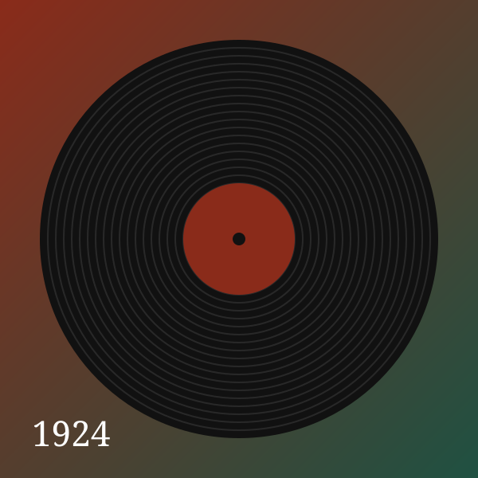

“Revenge! Timotheus Cries” — Handel, *Alexander's Feast* (Vocalion X-9560, 1924/25)

Background: This is a particularly strong example of music represented as an instrument of retaliation. In Handel's Alexander's Feast, the singer Timotheus evokes the Furies and the ghosts of Greeks slain in earlier wars with Persia. His song moves Alexander toward burning Persepolis, framed by the poem as vengeance for Greek dead. The aria is not simply an aggressive title: the libretto explicitly stages a remembered injury, summoned dead, and a retaliatory act. It is a fictionalized ancient-historical narrative mediated through John Dryden's 1697 ode and Newburgh Hamilton's adaptation, not a neutral record of Alexander's actual motives.
Performer: Malcolm McEachern, bass; Aeolian Orchestra.
Label/catalogue: Vocalion X-9560, 10-inch 78rpm, issued in the United Kingdom.
Session/matrix: specialist Vocalion sessionography lists London, October 1924?, matrix/session numbers 03724 and 03725, with “Revenge Timotheus cries” parts 1 and 3 and “Behold a ghastly band” part 2; issue X-9560 is linked to 03724 and …
Publication: the UK Vocalion catalogue's 1926 edition (covering issues through November 1925) lists X-9560 as “Revenge! Timotheus Cries,” Alexander's Feast (Handel), parts I and II, with Aeolian Orchestra, bass Malcolm McEachern; its foreword says …
Cross-check: a later McEachern discography independently lists X-9560 and matrices/issues 03724/03725. A 2010 specialist review says McEachern recorded the aria on Vocalion in the early 1920s and comments on the 1924 studio circumstances; useful …